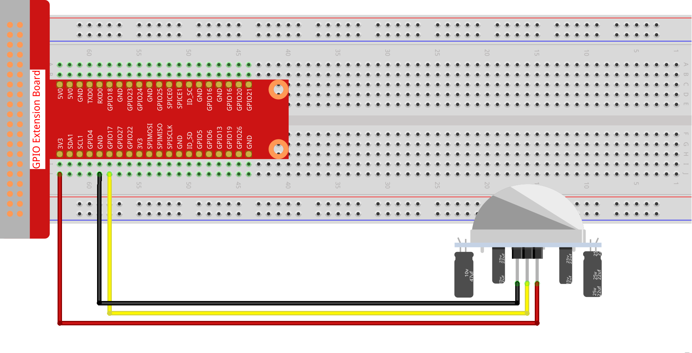
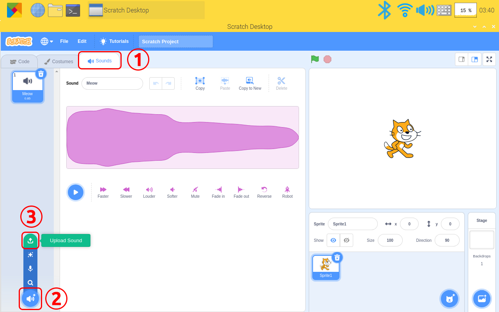
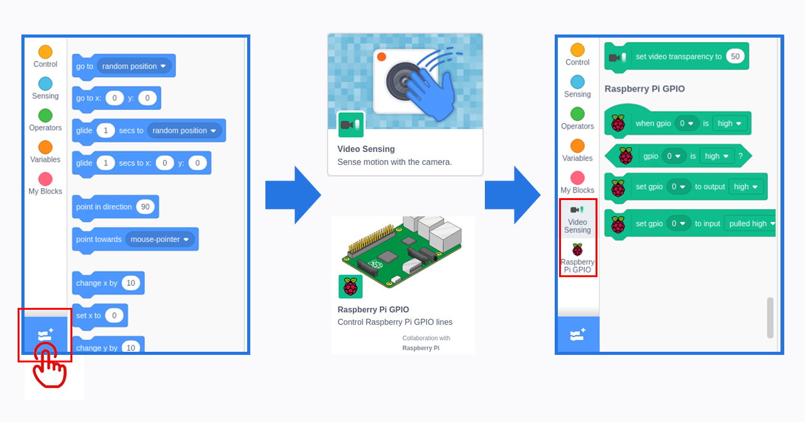
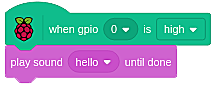
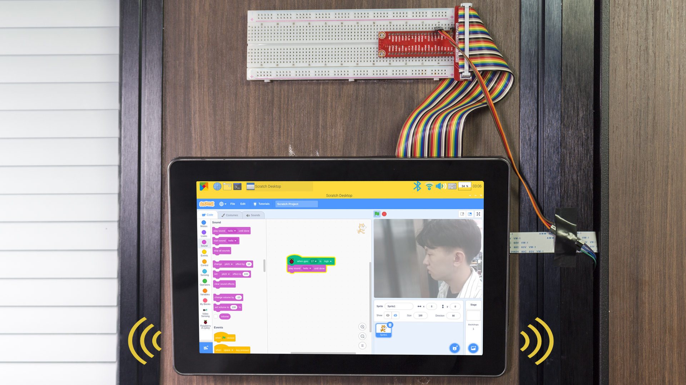

Note
Hello, welcome to the SunFounder Raspberry Pi & Arduino & ESP32 Enthusiasts Community on Facebook! Dive deeper into Raspberry Pi, Arduino, and ESP32 with fellow enthusiasts.
Why Join?
Expert Support: Solve post-sale issues and technical challenges with help from our community and team.
Learn & Share: Exchange tips and tutorials to enhance your skills.
Exclusive Previews: Get early access to new product announcements and sneak peeks.
Special Discounts: Enjoy exclusive discounts on our newest products.
Festive Promotions and Giveaways: Take part in giveaways and holiday promotions.
👉 Ready to explore and create with us? Click [here] and join today!
DIY Monitor Device
Description
You can turn this screen into a game screen playing with your friends, a smart alarm showing the weather and time, a display monitoring your robot’s action and many other things.
This article will show you how to DIY a Monitor Device. Let’s take a look!

Required Components
A Screen
8G+ SD Card
Scratch 3 (either online or offline)
Micro SD Card Reader
40P Ribbon Cable
T-Type GPIO Extension Board
Breadboard
PIR Module
Camera Module
FFC Cable
Jump Wire F/M
You Will Learn
Use Raspberry Pi extensions on Scratch.
Use audio functions on Scratch.
Use PIR module.
Lesson Guide
Build the Circuit
First connect the GPIO Extension Board, please read GPIO Extension Board for specific steps.
Plug the T-type GPIO extension board into the breadboard and build the circuit.
{kind=link}

For the camera installation tutorial, please refer to Assemble the Camera Module.
Programming with Scratch 3
In this step you will learn how to upload the prepared music to the Scratch. Tap the “Sounds”option on the left upper corner，then tap the “speaker” icon and choose “Upload Sound” icon to upload the prepared music file - hello, finally tap“Open” to confirm.
{kind=link}

Tap Add icon at lower left corner and choose“Video Sensing”and“Raspberry Pi GPIO”to add two functions.
{kind=link}

Back to the main page, drag a“when gpio 0 is high”from Raspberry Pi GPIO function and a “play sound (hello) until done”to the coding area.
{kind=link}

Stick the pir module and camera to the wall outside the door, and stick the screen to the wall inside the door or anywhere. When the door is opened, you will hear music and then see who is there.
{kind=link}
